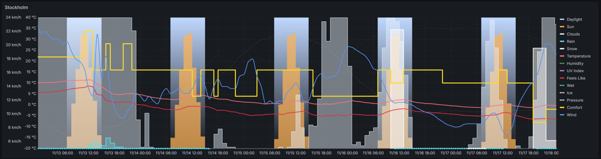
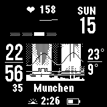

What is WeaCoDi?
Weacodi is an alternative way to visualize the weather forecast, allowing you to assess atmospheric conditions in one second. Instead of complex numerical values, Weacodi uses an intuitive diagram to quickly convey how comfortable or uncomfortable the weather will be. This unique approach allows you to understand at a glance whether you should, for example, plan a walk or a workout.
Weacodi is based on the principles of human cognitive perception of weather conditions and multimodality. This approach uses various sensory channels for a more complete and intuitive understanding of the weather.
You can dive deeper into the concept in the documentation section.
Weacodi displays various weather parameters, such as:
- Sky condition (sunny, cloudy)
- Precipitation (rain, snow)
- Comfort level (calculated based on weather conditions)
This allows you to quickly "feel" the weather without spending time analyzing complex data.
Weather Comfort Diagram
Short name: Weacodi™, phonetic transcription: /wiːˈækədi/.
Ease of Perception: The main goal of the diagram is to provide the user with weather information without the need to read numerical values, which significantly simplifies decision-making regarding training or trips.
Combination of Graphs: The diagram consists of a set of combined graphs, which allows integrating various weather data into a single image, making it easier for the user to perceive.
Absence of Numerical Values: The diagram does not use numerical values, making it intuitive and accessible for users without specialized training.
Relative Values: The values on the Y-axis are relative and help the user quickly understand how comfortable or dangerous the weather conditions are without delving into details. The diagram consists of a set of combined graphs that display various weather parameters throughout the day. The Y-axis of the diagram reflects relative values answering the question, "How much? Is it maximally possible or not at all?" This allows visualizing different aspects of the weather without the need for specific numerical values. The X-axis of the diagram reflects time.
Visual Representation of Weather Conditions: The diagram displays various weather parameters, including sky, sun, cloudiness, rain, snow, as well as the calculated comfort level, providing the user with a comprehensive view of the weather conditions.
The diagram displays the following data (see picture):
- Day – displayed depending on the time of day (1).
- Night – displayed depending on the time of day (black color area).
- Sun – the amount of sunlight, taking the time of day into account (2).
- Clouds – shows the presence and density of clouds, from a few clouds to a complete overcast (3).
- Rain – displays the presence of precipitation, including the probability and intensity of rain (4).
- Snow – displays the presence of snow, including the probability and intensity of snowfalls (5).
- Calculated comfort level (optional) – determined based on weather conditions, taking into account the time of year, showing comfort for cycling and training depending on the current conditions (6).
- Other relative values, for example, wind speed, where the maximum value "very windy" and minimum value "no wind at all" are relative and depend on the current application requirements.
Particular attention should be given to the line on the graph representing the "comfort level." This parameter is calculated using a unique algorithm that takes into account all weather data, including the sun, cloudiness, rain, and snow, as well as seasonal changes. The maximum comfort level means "very comfortable," the minimum means "absolutely uncomfortable, dangerous," and the average means "normal comfort level."
With this diagram, the user can instantly get an answer to the question: "Is the weather comfortable?" without the need to read numerical values. This simplifies the decision-making process of whether it’s worth going for a walk, training session or a ride.
Example Weacodi
We can see that it's currently night. Tomorrow will be a good day, though there will be no sunshine. Rain is expected overnight and will continue into the morning. The following day will bring both rain and snow. However, after that, a beautiful sunny day will follow.
Cycling Weather app
Below is an example of how Weacodi is embedded as a widget inside the Cycling Weather application.
Screenshot from the Cycling Weather app.
Learn more & downloadWeacodi Grafana Plugin
Official datasource + panel bundle for Grafana, powered by the Fastify API from this project.
Code licensed under AGPL‑3.0; the Weather Comfort Diagram concept remains under CC BY-SA 4.0.
Garmin Instinct 2 watch face
Below is an example of the monochrome Weacodi widget on Garmin Instinct 2.
Weacodi watch face for Garmin Instinct 2.
Documentation
The guide shows how to build and embed the Weather Comfort Diagram consistently in apps, dashboards, and print.
- Layout: time axis, relative scale, day/night bands, comfort level, core layers.
- Elements: sun/cloud, rain/snow, comfort line, other optional parameters.
- Styling: palette, typography, spacing, and general readability guidance.
- Usage examples: widget, wearable, and dashboard layouts.
- License reminders: how to attribute and keep derivatives under ShareAlike.
Download: weacodi-concept.pdf
License
Weacodi (Weather Comfort Diagram) is released under the Creative Commons Attribution-ShareAlike 4.0 license. In practice this means:
- Use it: embed the diagram in dashboards, widgets, wearables, or any other project, commercial or personal.
- Credit it: provide attribution by linking to weacodi.com and referring to the concept as “Weather Comfort Diagram” or “Weacodi”.
- Share alike: publish adaptations under CC BY-SA 4.0 (or a compatible ShareAlike license such as AGPL-3.0) so improvements remain open.
Trademark notice
Weacodi™ and any stylized variants are trademarks of the project authors. Use the name descriptively, but do not brand your product, logo, or domain with it without permission.
Questions? Email weacodi@gmail.com.